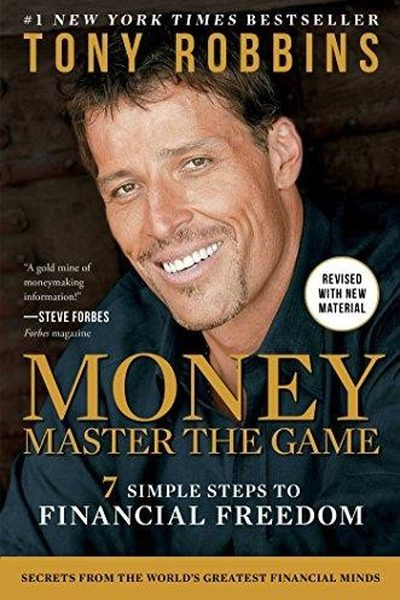

Library › Money & Finance
Money: Master the Game — Summary & Key Lessons

7 simple steps to financial freedom — distilled from 50 interviews with the world's greatest investors, from Buffett to Dalio.
📖 OPEN THE FULL INTERACTIVE BREAKDOWN →🌐 Read it in Hindi, Hinglish, Gujarati, Tamil & 22 more languages — free, with audio.
💡 The Big Idea
Tony Robbins interviewed 50 financial legends (Buffett, Dalio, Bogle, Munger) and found they agree on remarkably simple truths: asset allocation drives 90%+ of returns; fees are the silent killer; no one can time the market; and the investor's behavior — not intelligence — decides outcomes. His 7-step plan: make the game unwinnable for the industry by cutting costs, automate savings, diversify globally, and compound for decades.
🧠 The 5 Key Lessons
Lesson 1: The Financial Game Is Rigged — So Change the Rules
The Game
The financial industry profits when you trade, churn and panic. The legends' counter-strategy: make the game unwinnable for the industry — buy low-cost index funds, hold for decades, ignore the noise. You can't beat the professionals at their game; you can stop playing it.
📖 Example: Robbins' math: the average investor earns far less than the market because of bad timing and high fees. Buffett's famous bet — a simple index fund beat a portfolio of hedge funds over 10 years — proved the point to the world. Read the full example →
⚡ Do this: Check every fee you pay on investments: anything above ~0.5% is eating your future. Switch the core of your portfolio to low-cost index funds.
Lesson 2: The Magic of Compounding: Time Is the Force
Compounding
Robbins calls compound interest the most powerful force in finance: small amounts, started early, growing at 8-12% become enormous over decades. The formula for wealth: save early, save often, touch nothing. Every year you delay costs you disproportionately — the first decade is the magic one.
📖 Example: The book's table: investing ₹10,000/month from age 25 vs 35 can mean lakhs vs crores difference at 60 — purely because of the extra decade of compounding. Time is the multiplier you can't buy later. Read the full example →
⚡ Do this: Compute what your current savings rate becomes at 60. If it's not enough, increase it by 1% of income this month — automation makes it painless.
Lesson 3: The Core Four: Diversify Like the Legends
The Core Four
Robbins' 'Core Four' portfolio: split your money across US stocks, international stocks, bonds, and a buffer (cash/gold-like assets) — rebalanced yearly. Diversification is the only free lunch: something always wins, and you never get wiped out.
📖 Example: The Core Four, rebalanced annually, historically returned ~9% with less pain than any single asset — because the crashes in one bucket were offset by gains in another. Read the full example →
⚡ Do this: Write your target allocation across 4 buckets. Set a yearly rebalance date (e.g., every January) and stick to it — that discipline IS the strategy.
Lesson 4: Behavior Beats IQ: The Investor Is the Enemy
The Investor's Mind
Every legend told Robbins the same thing: the biggest risk isn't the market — it's YOU. Selling at the bottom, chasing the top, checking prices daily and acting on fear destroys more wealth than any crash. The fix is structural: automate, diversify, and only look at your portfolio quarterly.
📖 Example: Studies show investors who checked their portfolios daily earned less and stressed more than those who checked quarterly. The best investors are often the most boring — auto-invest and ignore. Read the full example →
⚡ Do this: Set automatic monthly investing. Then limit yourself to ONE portfolio check per quarter — schedule it, don't check on impulse.
Lesson 5: The 7-Step Plan: Simple Rules, Massive Results
The Plan
Robbins' practical steps: 1) Save at least 10% (pay yourself first), 2) Cut every fee, 3) Maximize tax-advantaged accounts, 4) Diversify globally, 5) Use the Core Four, 6) Rebalance yearly, 7) Enjoy life without guilt — money is a means, not a score. Simple, boring, and it beats 95% of professionals.
📖 Example: The book's retirees who followed the plan report the real prize: freedom — waking up with no boss, no clock, no fear. The money was always the vehicle. Read the full example →
⚡ Do this: Pick ONE step you haven't done (start automatic saving? cut a fee? rebalance?) and do it this week. Then next week, the next one.
✅ 5-Step Action Plan
- Check and cut every investment fee above 0.5%.
- Automate saving at least 10% of income.
- Set your Core Four allocation and a rebalance date.
- Limit portfolio checks to once per quarter.
- Do one step of the 7-step plan every week.
💬 Best Quotes from Money: Master the Game
- “It's not about how much you make — it's about how much you keep.”
- “The greatest enemy of wealth creation is the person in the mirror.”
- “Asset allocation is the only free lunch in investing.”
Interactive version: mark lessons as read, listen in your language, share quote cards.